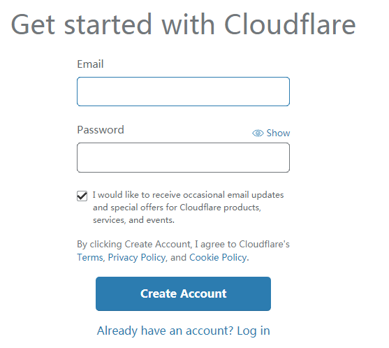
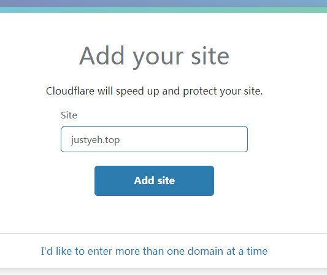
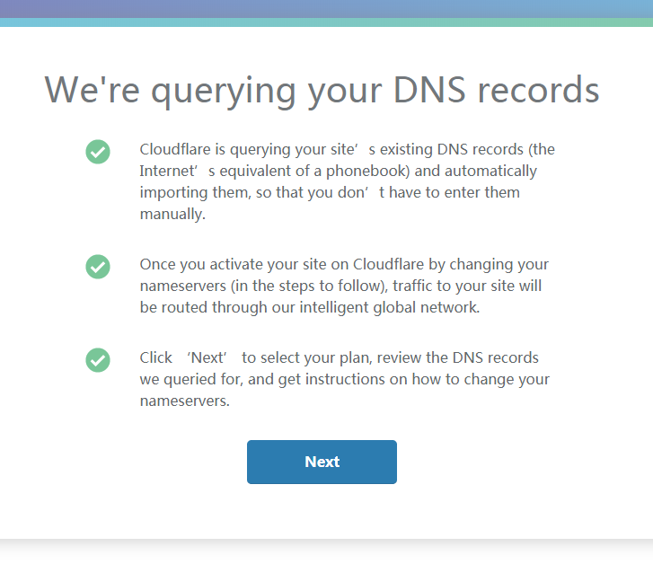
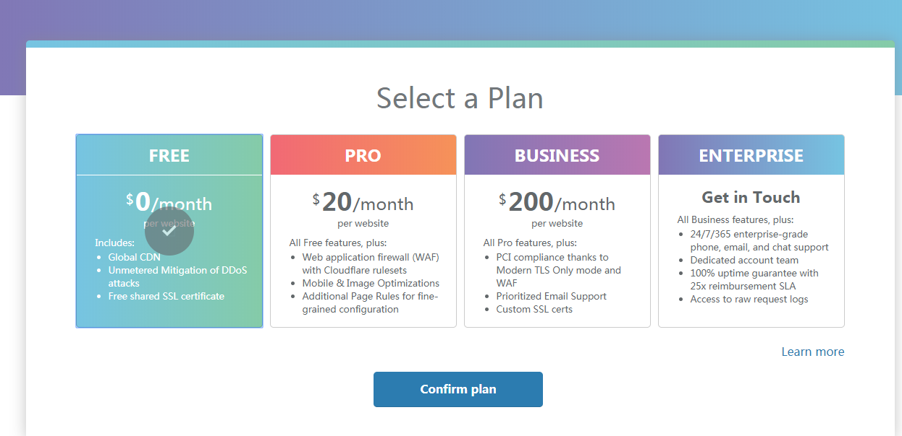
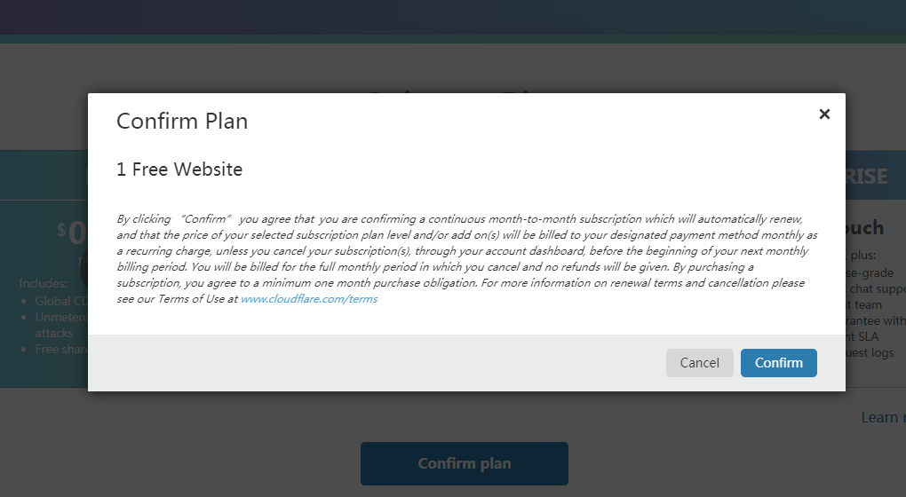
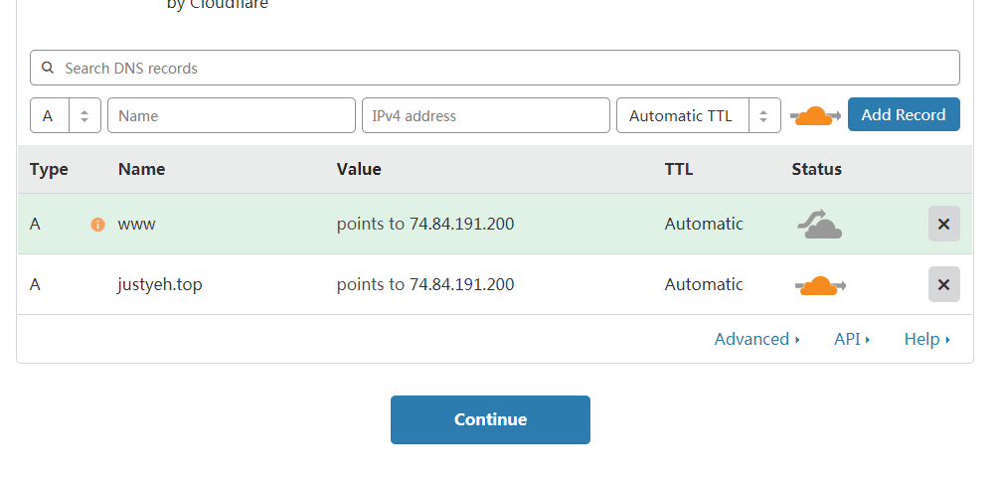
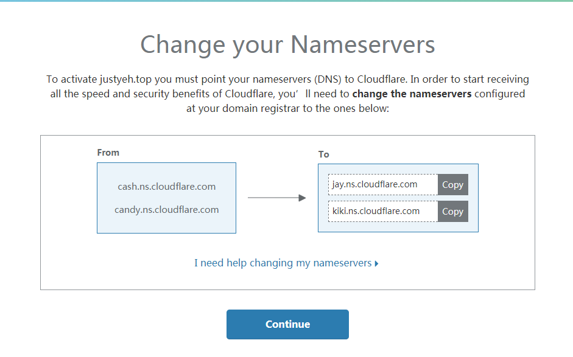
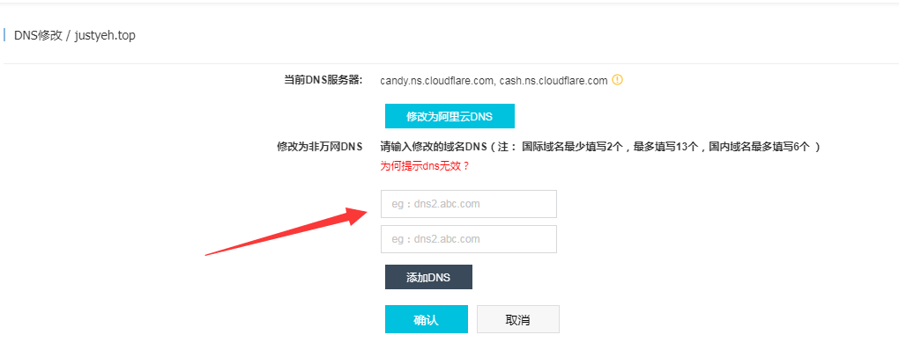
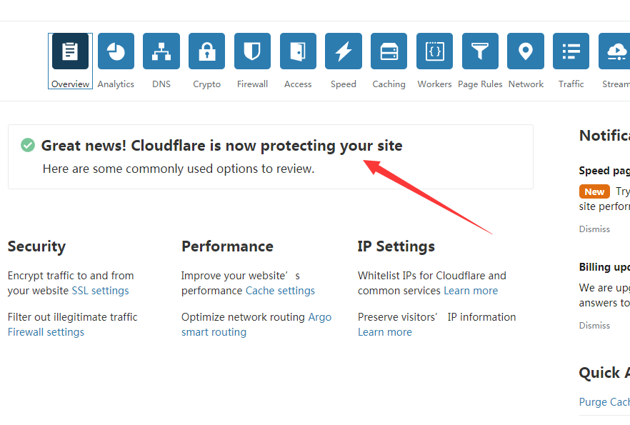

果真是6月运维节，这几天大量网友反映IP被封，我的搬瓦工也不幸中招。在v2ex上了解到可以通过使用Cloudflare来解决此问题，记录一下过程。
关于cloudflare
cloudflare是一家国外的 CDN 加速服务商，提供免费和付费的加速和网站保护服务，国内用户使用此服务后有可能网站加载变得更慢，但至少目前，cloudflare是一个有效并且免费的解决方案。
教程
注册
浏览器输入cloudflare.com，输入邮箱、密码，点击“Create Account”

添加站点
注册成功后会提示你输入网址，输入后点击“Add site”

添加成功会提示你他将查询网站的DNS记录，点击“Next”即可

选择套餐
这里我选择的是免费的，当然你愿意付费也是可以的，之后点击“Confirm plan”

之后会弹出确认提示框，点击“Confirm”即可

域名解析
你会发现cloudflare已经自动添加了部分域名解析，当然你也可以自己添加、修改和删除解析记录。
注意图中的Status图标，灰色代表不适用cloudflare的CDN服务，黄色代表使用。像我这样IP被封的，都选择使用就行。
配置好之后点击“Continue”

修改域名DNS
解析配置好之后会提示你修改域名DNS

我的域名是万网买的，打开阿里云控制台，选择域名面板并点击你的域名，这时会显示你的域名基本信息
点击修改DNS

将cloudflare中的提供的DNS填入到输入框中，点击“确认”

完成
安装上面的步骤一步步来的话，应该是不会出问题的。最后点击页面左上角你添加的网站，如果出现下面的页面，即代表配置成功。之后（DNS解析需要时间，我这边几分钟就生效了），被封的网站应该就能访问了。
